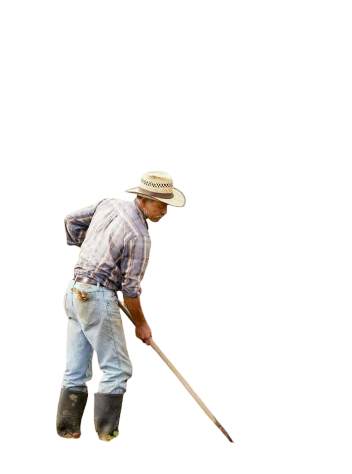
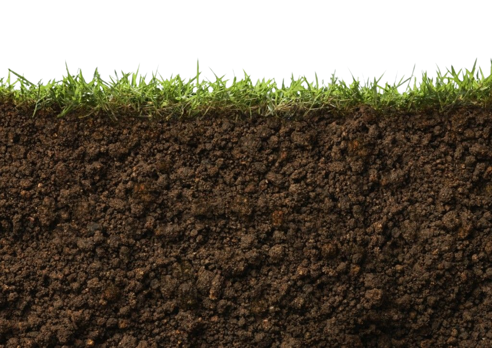
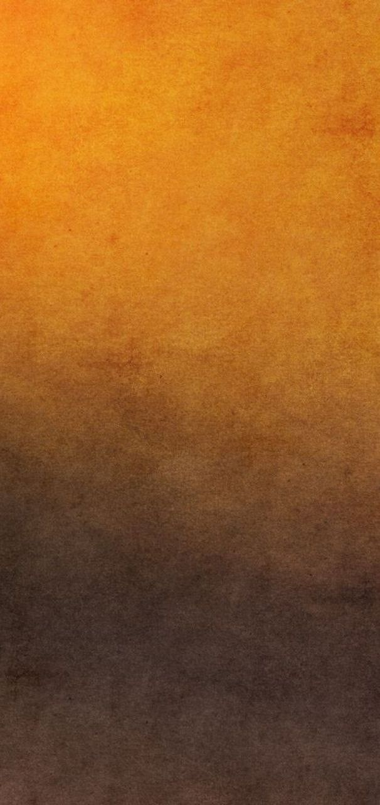

VOCÊ SABE DE ONDE VEM SEU ALIMENTO?
Conheça a união entre a força do campo e o respeito à natureza. Descubra como a tecnologia e a sustentabilidade transformam o agronegócio para garantir o amanhã.
SAIBA MAIS!


Conheça a união entre a força do campo e o respeito à natureza. Descubra como a tecnologia e a sustentabilidade transformam o agronegócio para garantir o amanhã.
SAIBA MAIS!

O agronegócio é o motor que movimenta a nossa economia e alimenta o mundo. Combinando a tradição do trabalhador rural com tecnologias de ponta, alcançamos recordes de produtividade para garantir que o alimento chegue à mesa de bilhões de pessoas.


O ciclo começa com a escolha de sementes de qualidade, manejo correto do solo e técnicas que respeitam os recursos naturais.
O transporte inteligente conecta o campo à cidade de forma rápida, utilizando rotas otimizadas e veículos modernos para reduzir a emissão de gases e evitar o desperdício de grãos nas estradas.
Na mesa o ciclo se completa. Escolher alimentos de origem sustentável e combater o desperdício diário são atitudes que valorizam o produtor rural e protegem o futuro do planeta.